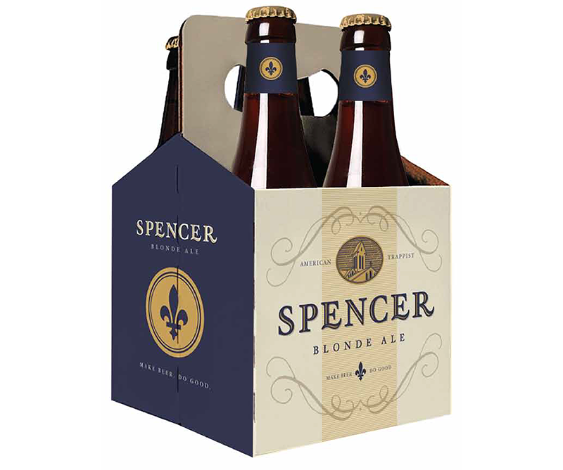

In late 2012 I began working with the Spencer Brewery to develop their new brand. Spencer is America's first Trappist brewery, run by the Trappist monks at St. Joseph's Abbey in Spencer, Massachusetts.
Our first meeting took place during the early stages of their venture—construction of the brewery had just begun and they were developing a recipe. Beyond the name Spencer, they had not given much thought to the brand identity or positioning.
A few pages from the Spencer Brand Brief
I stayed with the monks at their monastery in Spencer to learn about their unique way of life. After my stay, I got to work writing a brand brief that would act as our bible (pun intended) for the next stages of development.
We identified potential brand elements drawn from the abbey's 200 year history: typography lifted from the abbey's marble high altar, the abbey shield, fleur-de-lis, colors, and bell tower. Simplicity and humility were paramount.
With our brief in hand, I went looking for graphic designers. We felt the world-class Austin firm Helms Workshop, was the best fit.
Early packaging mockup. Read the Helms case study.
I worked closely with Helms for 2 months to refine the concept. In the end we arrived at a look that was strikingly similar to the original brand brief, the perfect expression of the brewery's vision.
With packaging for the first beer Spencer Trappist Ale set, we developed line extension options for future beers.
All Trappist breweries serve their beer in a custom chalice. From a technical standpoint, the volume of the glass needed to match the bottle size, exactly 11.2 fl. oz. There were also functional considerations such as aroma and foam preservation, handfeel, durability, and recognition.
Tap handles are one of the few opportunities for visibility in a crowded bar. The bell tower is the defining feature of the monastery's architecture.
The website had two objectives: tell the story of the monastery/brewery and describe the beer. It had to be mobile, linked to our online merch store, and have promotional material access for distributors and the media.
Beyond setting up the traditional social trifecta of Facebook, Twitter, and Instagram, we also needed an online shop where customers could order the chalice. I ran our store on Shopify with fulfillment by Shipwire.
In order to introduce the monks—who never the monastery—to the public, I shot and edited a documentary about their daily life. This was challenging as monastic life is inherently hermetic. I worked in silence and with care, making myself (and equipment) as invisible as possible.
During this trip I shot photography of the monastery and monks that would be used for the website and media who ran our story.
Some examples of the signs, coasters, business cards, etc. that I designed and produced.